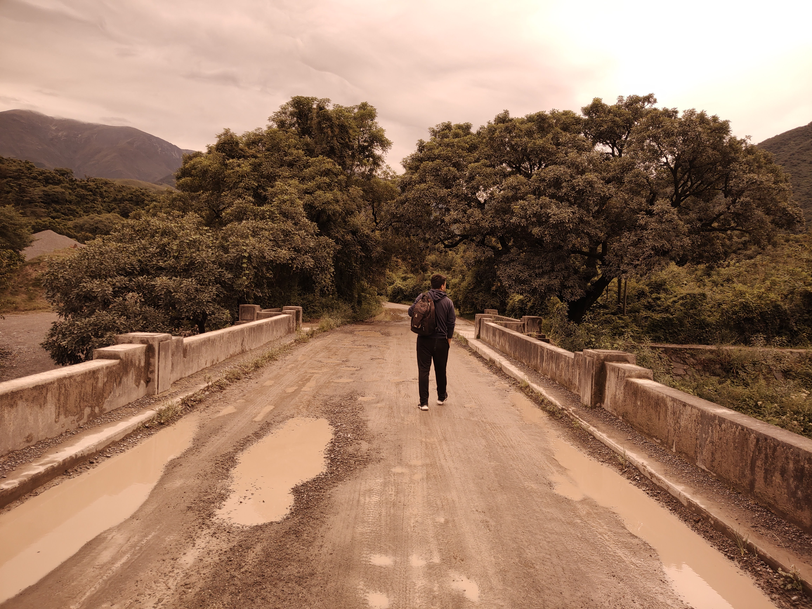

Un Vistazo a mi Trayectoria
Residente de la hermosa ciudad de Córdoba, Argentina, y padre de dos maravillosos niños, quienes son mi mayor fuente de inspiración y la razón por la que busco crecer constantemente. Mi labor se desarrolla como Analista de Sistemas en una consultora local, abarcando proyectos de diversas tecnologías, lo que me permite expandir mis capacidades diariamente.
Esta experiencia me impulsó a explorar más en el campo del desarrollo web. Además, me desempeño como desarrollador FullStack Java, encargándome del mantenimiento de proyectos internos de la empresa.
En los últimos 6 meses, me he dedicado a perfeccionarme en el ámbito del desarrollo web, iniciando mi educación de manera autodidacta.
Sin embargo, mi vida no gira únicamente en torno al trabajo. En mi tiempo libre, me sumerjo en actividades deportivas, con un interés especial en simulaciones militares, donde pongo a prueba mis habilidades tácticas y estratégicas. Para momentos de relajación, disfruto explorar el mundo de los mangas y compartir momentos valiosos con mi familia y amigos.
También disfruto mucho de la experiencia culinaria y de descubrir nuevos sabores en distintos restaurantes. Viajar es otra de mis grandes pasiones; adoro explorar los diversos rincones de Argentina y maravillarme con sus paisajes imponentes. Los fines de semana, aprovecho la variada oferta paisajística de Córdoba para desconectar y relajarme en compañía de mi familia.
Mi objetivo es adquirir los conocimientos necesarios para incursionar en el mundo del desarrollo web y proporcionar soluciones tecnológicas eficientes, enfrentando problemas complejos con éxito. Mi aspiración es complementar constantemente mis habilidades para convertirme en un programador cada día más sólido y eficiente.